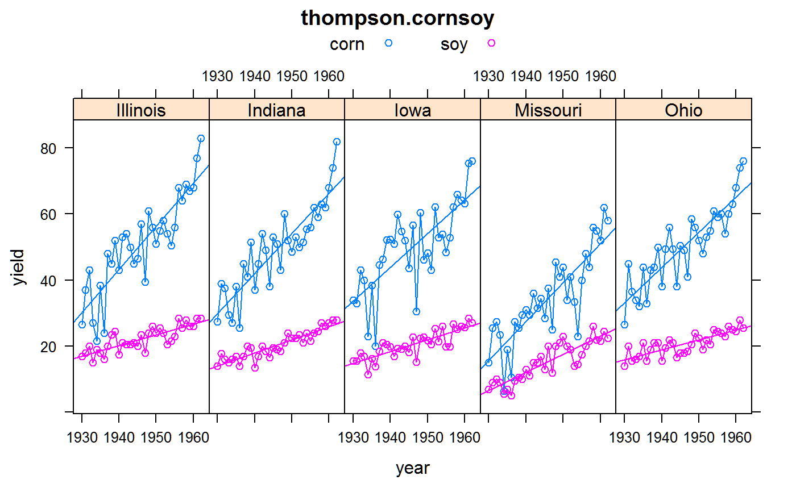
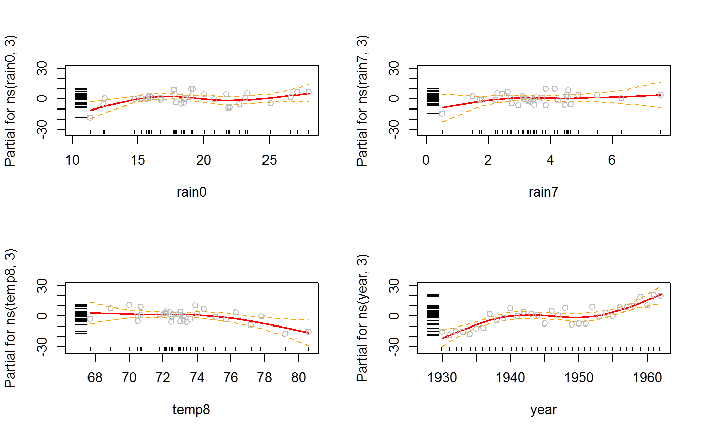

thompson.cornsoy.RdAverage yield of corn and soybeans in five U.S. states (IA, IL, IN, MO, OH) during the years 1930-1962. Pre-season precipitation and average temperature and precipitation during each month of the growing season is included.
statestate
yearyear, 1930-1962
rain0pre-season precipitation in inches
temp5may temperature, Fahrenheit
rain6june rain, inches
temp6june temp
rain7july rain
temp7july temp
rain8august rain
temp8august temp
corncorn yield, bu/acre
soysoybean yield, bu/acre
Note: The Iowa corn data has sometimes been identified (in other sources) as the "Iowa wheat" data, but this is incorrect.
The 'year' variable affects yield through (1) improvements in plant genetics (2) changes in management techniques such as fertilizer, chemicals, tillage, planting date, and (3) climate, pest infestations, etc.
Double-cross corn hybrids were introduced in the 1920s. Single-cross hybrids became common around 1960.
During World War II, nitrogen was used in the production of TNT for bombs. After the war, these factories switched to producing ammonia for fertilizer. Nitrogen fertilizer use greatly increased after WWII and is a major reason for yield gains of corn. Soybeans gain little benefit from nitrogen fertilizer. The other major reason for increasing yields in both crops is due to improved plant genetics.
Crops are often planted in May, and harvest begins in September.
Yields in 1936 were very low due to July being one of the hottest and driest on record.
Some relevant maps of yield, heat, and precipitation can be found in Atlas of crop yield and summer weather patterns, 1931-1975, https://www.isws.illinois.edu/pubdoc/C/ISWSC-150.pdf
The following notes pertain to the Iowa data.
The 1947 June precipitation of 10.33 inches was the wettest June on record (a new Iowa June record of 10.34 inches was set in 2010). As quoted in Monthly Weather Review (Dec 1957, p. 396) "The dependence of Iowa agriculture upon the vagaries of the weather was closely demonstrated during the 1947 season. A cool wet spring delayed crop planting activity and plant growth; then, in addition, a hard freeze on May 29th ... further set back the corn. The heavy rains and subsequent floods during June caused appreciable crop acreage to be abandoned ... followed by a hot dry weather regime that persisted from mid-July through the first week of September."
In 1949 soybean yields were average while corn yields were low. From the same source above, "The year 1949 saw the greatest infestation of corn borer in the history of corn in Iowa".
1955 yields were reduced due to dry weather in late July and August.
Thompson, L.M., 1963. Weather and technology in the production of corn and soybeans. CAED Report 17. The Center for Agriculture and Economic Development, Iowa State University, Ames, Iowa.
Draper, N. R. and Smith, H. (1981). Applied Regression Analysis, second ed., Wiley, New York.
library(agridat) data(thompson.cornsoy) dat <- thompson.cornsoy # The droughts of 1934/36 were severe in IA/MO. Less so in OH. libs(lattice) xyplot(corn+soy~year|state, dat, type=c('p','l','r'), auto.key=list(columns=2), main="thompson.cornsoy", layout=c(5,1),ylab='yield')# In 1954, only Missouri suffered very hot, dry weather ## xyplot(corn~year, dat, ## groups=state, type=c('p','l'), ## main="thompson.cornsoy", ## auto.key=list(columns=5), ylab='corn yield') # Rain and temperature have negative correlation in each month. # July is a critical month: temp and yield are negatively correlated, # while rain and yield are positively correlated. # splom(~dat[-1,-1], col=dat$state, cex=.5, main="thompson.cornsoy") # \dontrun{ # Plots similar to those in Venables' Exegeses paper. dat.ia <- subset(dat, state=="Iowa") libs(splines) m2 <- aov(corn ~ ns(rain0, 3) + ns(rain7, 3) + ns(temp8, 3) + ns(year,3), dat.ia) op <- par(mfrow=c(2,2)) termplot(m2, se=TRUE, rug=TRUE, partial=TRUE)